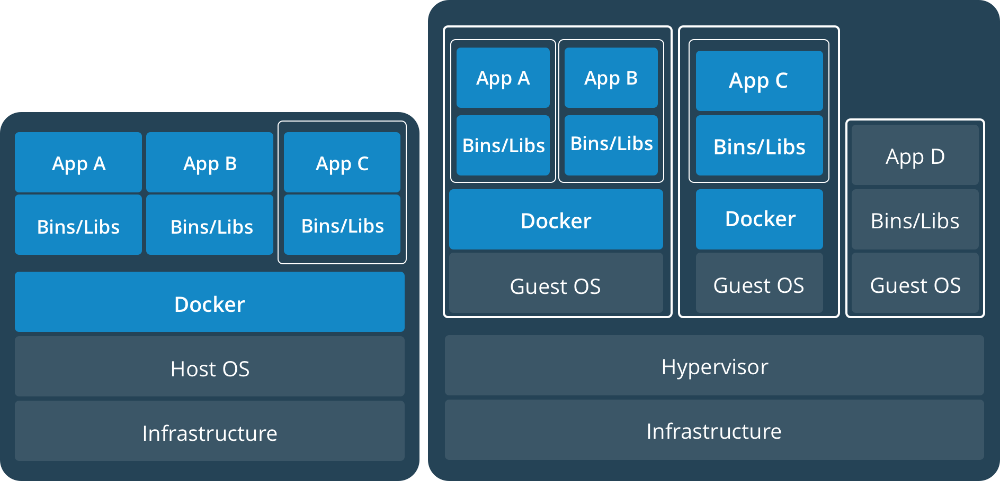

Docker Webinar
Starting inWelcome to my webinar about
About me
- My name is Florian Kappes
- I'm 31 years old
- I work for SWARCO Traffic Systems in Germany with my office located in Trier
- I've got 9 years of software development experience
- This is my first live webinar ever!
Content
- Presenting Docker ( 10-15 minutes )
- Let's Code ( 20-30 minutes )
- Reference projects
- Questions & Answers
Part 1
Presenting Docker
What is docker? An excerpt!
- It's an application runtime environment
- You can pack your applications in a standard way
- It's your system description
- You can easily build multi service systems with it
Containers & Services ...
"I already use something like that. Virtual machines!"
Evolution!
Happens!
The Matrix from hell!
"Ahhhh ... CREEPY ... Why ... What ...?"
Installing multiple independent services on a single machine, real or virtual, is a recipe for disaster. This is called the matrix of hell!
An example
It's all about containers!

The solution: DOCKER
So what is the difference to a VM?
Containers all run on top of the same host OS and take up substantially less resources!
What exactly is a docker container?
It's all about layers!
Docker in numbers
- Over 14 million docker hosts
- Billions of image pulls from docker hub
- Thousands of contributors
- Docker groups in more than 280 cities
- Overall Docker adoption at around 35%
Lets try it out!
"I'm a bit scared that it's difficult to use but I say lets face it and try it out!"
Part 2
Let's Code
Install docker
To get the latest stable version, on all systems use the official docker install script:
#https://github.com/docker/docker-install
curl -sSL https://get.docker.com/ | sh
Official documentation: docs.docker.com
Check version and images
Getting Images
Official images reside on hub.docker.com which is the default registry for Docker:
Basic operations
-
Download an image
docker pull debian -
Run a container
docker run -it debian -
List running containers
docker ps -
Remove containers
docker rm 'id'
Running containers
Advanced operations
-
Environment variables / volumes and published ports
docker run -E ENV_NAME -V HOST:GUEST -p HOST:GUEST... -
Running named container in daemon mode
docker run --name NAME -d -
Attach to running containers
docker exec CONTAINER_ID COMMAND
Hosting postgreSQL
A simple service
import java.io.IOException;
import java.io.OutputStream;
import java.net.InetSocketAddress;
import com.sun.net.httpserver.HttpExchange;
import com.sun.net.httpserver.HttpHandler;
import com.sun.net.httpserver.HttpServer;
public class Tardis {
public static void main(String[] args) throws Exception {
HttpServer server = HttpServer.create(new InetSocketAddress(3000), 0);
server.createContext("/tardis", new MyHandler());
server.setExecutor(null);
server.start();
}
static class MyHandler implements HttpHandler {
@Override
public void handle(HttpExchange t) throws IOException {
String response = "It's bigger on the inside!\n";
t.sendResponseHeaders(200, response.length());
OutputStream os = t.getResponseBody();
os.write(response.getBytes());
os.close();
}
}
}
We can operate time machines!
Building the first image
Reality isn't simple
Using Compose Stack or Swarm?
- Actually you're going to use all of them!
- But you're not going to use 'docker-compose' tool..
- Swarm is for managing clusters
- Stack is for deploying applications
- Compose defines the application tier's relations
What is a swarm
Single node swarm
Initializing a swarm
- Usually ou need just one command
docker swarm init -
but sometimes..
docker swarm init --advertise-addr 'interface'
Defining the stack
version: '3'
services:
grafana:
image: grafana/grafana:latest
volumes:
- /webinar/grafana/:/var/lib/grafana/
environment:
- GF_SECURITY_ADMIN_PASSWORD=secret
ports:
- "3000:3000"
influxdb:
image: influxdb:latest
volumes:
- /webinar/influxdb/:/var/lib/influxdb/
telegraf:
image: telegraf:latest
volumes:
- /webinar/telegraf/telegraf.conf:/etc/telegraf/telegraf.conf
- /:/rootfs/
- /var/run/docker.sock:/var/run/docker.sock
environment:
- HOST_PROC=/rootfs/proc
- HOST_SYS=/rootfs/sys
- HOST_ETC=/rootfs/etc
Self hosted monitoring
Running the stack
Summary
- Easy Deployment
- Same behaviour on testing and production systems
- Config gets part of documentation
- Easier maintenance and continuous deployment
- Modularity is easier
- Clusters & replication at hand
And Mr. Trollface?
"I can't wait to use docker myself!"
This webinar was created with
REVEAL.JS
Shellinabox
one last thing..
Please participate at the webinar poll:
https://goo.gl/forms/oWVWBhWyRFduFOyq1It's just 4 questions and takes less than a minute!
THANK YOU!
Part 4
Q&A
What about Windows?
- Windows 10 Anniversary Edition or Creators Update (Professional or Enterprise) & Server 2016
- Only Windows based images and by using Hyper V
- Linux containers by using docker machine or new HyperV based MobyLinuxVM as docker host
Multiple processes in one Docker container?
This approach is discouraged for most use cases. For maximum efficiency and isolation, each container should address one specific area of concern.
Is docker for free?
Docker is available as Community Edition (CE) for free and as Enterprise Edition (EE) subscription with software, support and certification.
Docker itself is open source and licensed under Apache License 2.0
What about security?
When you start a container with docker run, behind the scenes Docker creates a set of namespaces and control groups for the container.
Processes running within a container cannot see, and even less affect, processes running in another container, or in the host system.
Each container also gets its own network stack, meaning that a container doesn’t get privileged access to the sockets or interfaces of another container.